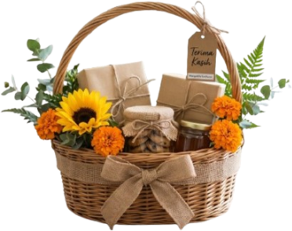
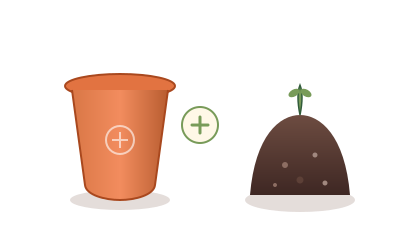

Rawat Hari Ini, Mekarkan Harapan Esok.
Dari benih kecil, tumbuh keindahan yang membawa kebahagiaan.


Sebuah Hampers, Sebuah Harapan
Hampers tanaman yang berisi bunga matahari mini dan marigold. Dibuat sebagai hadiah sederhana yang membawa keceriaan sekaligus mengajak penerimanya belajar menanam dan merawat tanaman.
Pot Bunga
Wadah cantik untuk menanam
Benih Bunga
Matahari Mini & Marigold
Media Tanam
Tanah dan kompos pilihan
Kartu Petunjuk
Panduan langkah menanam

Marigold – Si Ceria Berwarna Cerah
Sunflower – Cahaya Kecil yang Mekar
Mari Menanam Bunga Matahari!
Alat dan bahan:
Campurkan tanah dan kompos.
Masukkan campuran media tanam ke dalam pot.
Tanam benih sedalam 2–3 cm.
Tutup benih dengan tanah.
Siram secukupnya.
Letakkan pot di tempat bercahaya.
Perawatan:
Siram secukupnya dan rawat tanaman secara rutin.
Saatnya Menanam Marigold!
Alat dan bahan:
Campurkan tanah dan kompos.
Masukkan media tanam ke dalam pot.
Tanam benih marigold.
Tutup benih dengan tanah.
Siram secukupnya.
Letakkan pot di tempat bercahaya.
Perawatan:
Siram secukupnya, pastikan tanaman mendapat cahaya, dan rawat secara rutin.
Persiapkan Tempat Tumbuhnya

Pot Bunga
Pot digunakan sebagai wadah untuk menanam bunga.
Tanah & Kompos
Tanah dan kompos digunakan sebagai media tanam.
Petunjuk:
Campurkan tanah dan kompos.
Masukkan campuran ke dalam pot.
Tanam benih bunga sesuai petunjuk.
Siram secukupnya dan rawat secara rutin.